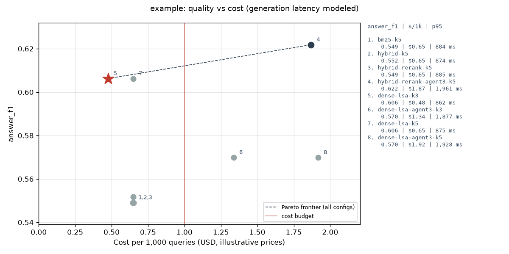

Open-source evaluation harness
Choose a RAG configuration on evidence: quality, latency and cost, with confidence intervals.
ragbench runs a matrix of retrieval and agentic search pipelines over the same queries, scores retrieval, answers, groundedness, latency and cost-to-serve, and recommends the best configuration under your budget. It runs offline with no API keys; Anthropic and OpenAI adapters are optional.
Quickstart View on GitHub Full report

Quickstart
Requires Python 3.11+ and uv. One command runs the whole demo offline, with no API keys:
git clone https://github.com/seanmcrae/ragbench.git && cd ragbench && make demo
make demo runs these three steps, which you can also run one at a time:
uv run rag-eval run configs/example.yaml # 8 pipelines x 55 queries
uv run rag-eval report --img-dir docs/img # runs/example/report.{md,html} + chart
uv run rag-eval compare bm25-k5 hybrid-rerank-agent3-k5 # paired deltas with 95% CIs
Other targets: make ci (lint, format check, type check, tests), make site (the static docs
site in site/), make scifact (optional public benchmark, downloads about 3 MB). To use a
hosted model instead of the mock, install an extra and export its key:
uv sync --frozen --extra anthropic && export ANTHROPIC_API_KEY=...
# in the experiment YAML: generator: {provider: anthropic, model: claude-haiku-4-5}
# judge: {provider: openai, model: gpt-4o-mini}
Results
Generated by make site from rag-eval run configs/example.yaml
(experiment example). Nothing below is typed by hand.
Dataset: synthetic-helpcenter (176 documents, 55 queries, fingerprint 32cc21df822d5c4e). Prices: illustrative table dated 2026-10-07. Run created 2026-10-08T07:36:22+00:00.
Generation latency comes from the offline mock's token-based latency model, not from a live API; retrieval latency is measured wall-clock.
Recommendation
Budget: cost <= $1.00 per 1k queries and p95 latency <= 1,500 ms. Selection: highest answer_f1 on the in-budget Pareto frontier.
Recommended: dense-lsa-k3 (answer_f1 0.606, $0.475 per 1k queries, p95 862 ms).
Versus the baseline bm25-k5: +0.057 answer_f1 [-0.013, +0.145], no significant difference at 95% over 55 queries.
Best answer_f1 regardless of budget: hybrid-rerank-agent3-k5 (0.622, +0.016 vs the recommendation) at 3.9x the cost and 2.3x the p95 latency.
In-budget Pareto frontier (cheapest first): dense-lsa-k3.
In budget but dominated: bm25-k5, hybrid-k5, hybrid-rerank-k5, dense-lsa-k5.
Over budget: hybrid-rerank-agent3-k5 (cost $1.868/1k > $1.00; p95 1961 ms > 1500 ms); dense-lsa-agent3-k3 (cost $1.337/1k > $1.00; p95 1877 ms > 1500 ms); dense-lsa-agent3-k5 (cost $1.916/1k > $1.00; p95 1928 ms > 1500 ms).
All pipelines
| pipeline | answer_f1 | exact_match | judge_score | groundedness | nDCG@5 | recall@5 | MRR | p50 ms | p95 ms | $/1k q | steps |
|---|---|---|---|---|---|---|---|---|---|---|---|
| bm25-k5 | 0.549 | 0.418 | 0.573 | 0.909 | 0.802 | 0.818 | 0.891 | 652 | 884 | 0.646 | 1.00 |
| hybrid-k5 | 0.552 | 0.436 | 0.573 | 0.909 | 0.810 | 0.818 | 0.938 | 652 | 874 | 0.650 | 1.00 |
| hybrid-rerank-k5 | 0.549 | 0.418 | 0.573 | 0.909 | 0.795 | 0.809 | 0.903 | 679 | 885 | 0.651 | 1.00 |
| hybrid-rerank-agent3-k5 | 0.622 | 0.491 | 0.645 | 0.927 | 0.795 | 0.809 | 0.903 | 1,603 | 1,961 | 1.868 | 1.67 |
| dense-lsa-k3 | 0.606 | 0.491 | 0.627 | 0.909 | 0.830 | 0.818 | 0.979 | 635 | 862 | 0.475 | 1.00 |
| dense-lsa-agent3-k3 | 0.570 | 0.455 | 0.591 | 0.927 | 0.827 | 0.800 | 0.979 | 1,545 | 1,877 | 1.337 | 1.73 |
| dense-lsa-k5 | 0.606 | 0.491 | 0.627 | 0.909 | 0.830 | 0.818 | 0.979 | 647 | 875 | 0.647 | 1.00 |
| dense-lsa-agent3-k5 | 0.570 | 0.455 | 0.591 | 0.927 | 0.830 | 0.818 | 0.979 | 1,599 | 1,928 | 1.916 | 1.65 |
Versus the baseline (bm25-k5)
Paired bootstrap over queries: difference in mean answer_f1 with a 95% percentile interval.
| pipeline | delta answer_f1 | 95% CI | p | verdict |
|---|---|---|---|---|
| hybrid-k5 | +0.003 | [-0.047, +0.055] | 0.956 | no significant difference |
| hybrid-rerank-k5 | +0.000 | [+0.000, +0.000] | 1.000 | no significant difference |
| hybrid-rerank-agent3-k5 | +0.073 | [+0.018, +0.145] | 0.038 | better |
| dense-lsa-k3 | +0.057 | [-0.013, +0.145] | 0.095 | no significant difference |
| dense-lsa-agent3-k3 | +0.021 | [-0.031, +0.091] | 0.455 | no significant difference |
| dense-lsa-k5 | +0.057 | [-0.013, +0.145] | 0.095 | no significant difference |
| dense-lsa-agent3-k5 | +0.021 | [-0.031, +0.091] | 0.455 | no significant difference |
answer_f1 by query type
| pipeline | error_cause | error_fix | feature_limit | feature_location | feature_plan | integration_objects | integration_sync | multi_hop | plan_attribute | policy |
|---|---|---|---|---|---|---|---|---|---|---|
| bm25-k5 | 0.85 | 0.69 | 1.00 | 0.56 | 0.80 | 0.00 | 0.40 | 0.00 | 0.71 | 0.46 |
| hybrid-k5 | 0.85 | 0.69 | 1.00 | 0.39 | 0.80 | 0.00 | 0.60 | 0.00 | 0.71 | 0.46 |
| hybrid-rerank-k5 | 0.85 | 0.69 | 1.00 | 0.56 | 0.80 | 0.00 | 0.40 | 0.00 | 0.71 | 0.46 |
| hybrid-rerank-agent3-k5 | 0.85 | 0.69 | 1.00 | 0.56 | 0.80 | 0.00 | 0.40 | 0.50 | 0.71 | 0.46 |
| dense-lsa-k3 | 0.85 | 0.69 | 1.00 | 0.39 | 0.80 | 0.00 | 1.00 | 0.00 | 0.81 | 0.46 |
| dense-lsa-agent3-k3 | 0.85 | 0.69 | 1.00 | 0.39 | 0.80 | 0.00 | 0.40 | 0.12 | 0.81 | 0.46 |
| dense-lsa-k5 | 0.85 | 0.69 | 1.00 | 0.39 | 0.80 | 0.00 | 1.00 | 0.00 | 0.81 | 0.46 |
| dense-lsa-agent3-k5 | 0.85 | 0.69 | 1.00 | 0.39 | 0.80 | 0.00 | 0.40 | 0.12 | 0.81 | 0.46 |
hybrid-rerank-agent3-k5 vs bm25-k5, every metric
The highest-quality configuration regardless of budget, against the baseline. Same output as rag-eval compare bm25-k5 hybrid-rerank-agent3-k5.
| metric | bm25-k5 | hybrid-rerank-agent3-k5 | delta | 95% CI | p |
|---|---|---|---|---|---|
| answer_f1 | 0.549 | 0.622 | +0.073 | [+0.018, +0.145] | 0.038 |
| exact_match | 0.418 | 0.491 | +0.073 | [+0.018, +0.145] | 0.038 |
| judge_score | 0.573 | 0.645 | +0.073 | [+0.018, +0.145] | 0.038 |
| groundedness | 0.909 | 0.927 | +0.018 | [+0.000, +0.055] | 0.695 |
| ndcg@5 | 0.802 | 0.795 | -0.007 | [-0.027, +0.016] | 0.485 |
| mrr | 0.891 | 0.903 | +0.012 | [-0.009, +0.039] | 0.450 |
| $/1k queries | 0.646 | 1.868 | +1.222 | ||
| p95 ms | 884 | 1,961 | +1,077 |
How evaluation works
- Run. Each pipeline answers every query: retrieve top-k (optionally rerank from a deeper
pool), build a prompt from the passages, generate an answer with
[doc-id]citations. An agentic pipeline may ask for another search, up tomax_steps. Every stage is timed and every completion records its token usage. - Score each query.
- Retrieval: recall@k, precision@k, MRR and nDCG@k against graded qrels (2 = states the answer, 1 = supporting or bridge document).
- Answer: SQuAD-style token F1 and exact match against the reference answers.
- Groundedness: share of answer sentences that cite a retrieved document, times the share of the answer's content terms found in the documents it cites. Uncited answers score 0.
- Judge: a 1-5 rubric (correct, complete, supported by cited passages) normalised to [0, 1]; the offline judge maps F1 and citation coverage onto it, an LLM judge reads the passages.
- Latency and cost: per-stage wall-clock (modeled for the mock generator), and tokens
priced from
configs/prices.yaml.
- Summarise. Means per pipeline, p50/p95 latency, cost per 1k queries, quality by query type.
- Decide. Drop configurations over the cost or p95 budget (reasons recorded), take the Pareto frontier of (quality, cost, p95) among the rest, and pick the highest quality, ties to cheaper then faster. Deltas against the baseline use a paired bootstrap over queries.
- Gate.
rag-eval compare A B --fail-on-regressionexits 1 only when B's gate metric is significantly worse than A's (the CI excludes zero) and the drop exceeds--tolerance.
Architecture

Mermaid source
flowchart LR
cfg["Experiment YAML: pipelines, matrix, budget"] --> run
data["Dataset: corpus, queries, qrels, answers"] --> run
run["Runner: each pipeline x each query"] --> ret
ret["Retriever: BM25, dense or hybrid RRF"] --> rr["Reranker (optional)"]
rr --> gen["Generator: mock, Anthropic or OpenAI"]
gen -->|"agentic: next search"| ret
gen <--> cache[("Response cache: SQLite, content-hashed")]
gen --> score["Scoring: retrieval, answer, groundedness, judge, latency, cost"]
prices["Price table YAML"] --> score
score --> results["runs/NAME: per_query.jsonl, summary.csv, manifest.json"]
results --> report["rag-eval report: budgeted Pareto pick, bootstrap CIs, MD, HTML, PNG"]
results --> compare["rag-eval compare: paired deltas, release gate"]
| Module | Responsibility |
|---|---|
datasets/ |
Dataset model, BEIR-format loader/writer, seeded synthetic generator |
retrieval/ |
BM25, dense retrieval over pluggable embedders, RRF hybrid, rerankers |
generation/ |
Generator protocol, extractive mock, LLM generator, Anthropic/OpenAI clients |
judge.py |
Shared rubric; heuristic judge (default) and LLM-as-judge |
pipeline.py |
Retrieve, rerank, generate; agentic loop with a step budget; per-stage timing |
metrics/ |
recall/precision/MRR/nDCG@k, token F1/EM, citation groundedness, percentiles |
cost.py |
Token usage, price table, cost per 1k queries |
cache.py |
Content-addressed generation and judge cache |
config.py, factory.py, runner.py, results.py |
Experiment matrix, wiring, persistence, summaries |
stats.py, pareto.py, report/ |
Paired bootstrap, frontier and budget pick, rendering |
Design decisions
- Offline by default, same code path online. The mock generator receives the exact prompt an API model would, so token counts and cost scale with context size and step count the way they would in production. Keys are only read when a hosted provider is configured.
- Latency is honest about where it comes from. Retrieval and reranking are timed wall-clock. API generations are timed wall-clock; the mock reports a modeled latency (350 ms + 0.08 ms per input token + 15 ms per output token) and every report says so.
- Cache keys hash content, not ids. A key covers the generator's identity and parameters, the question, prior searches and each passage's id and text hash. Editing a document invalidates exactly the generations that saw it. Cached entries keep their original latency so a warm re-run does not flatter a pipeline.
- Paired bootstrap over queries. Pipelines answer the same questions, so the harness resamples per-query differences rather than comparing two independent means; with 55 queries that is the difference between a usable interval and noise.
- A release gate needs significance and size.
compare --fail-on-regressionfails only when the CI of the delta is entirely below zero and the point estimate is worse than--tolerance. Either condition alone either blocks on noise or ships real regressions. - The recommendation is constrained, then Pareto. Configs over the cost or p95 budget are dropped with the reason recorded; the pick is the highest-quality point on the in-budget frontier of (quality, cost, p95), ties to cheaper then faster.
- Rank fusion, not score fusion. RRF (k=60) ignores raw scores, which live on incomparable scales for BM25 and cosine similarity.
- Own BM25 and BEIR's file format. A 60-line BM25 over an inverted index with Lucene's non-negative IDF is easier to verify (there is a hand-computed test) than a dependency, and the BEIR layout means public benchmarks load without conversion.
- Prices are configuration.
configs/prices.yamlis labeled illustrative and dated; a missing model is a loud error naming the known models.
Data
- Bundled synthetic corpus (
data/synthetic_helpcenter/, generated byscripts/generate_synthetic.pyfromsrc/rag_eval/datasets/synthetic.py, seed 7): the help center of Tallyhive, a fictional invoicing and time-tracking SaaS. 176 short documents (plan limits, feature setup, plan availability, integrations, error codes, policies, release notes) and 55 queries across 10 types, 8 of them multi-hop ("What is the seat cap on the cheapest plan that includes SAML single sign-on?"). Qrels are graded (2 = states the answer, 1 = supporting or bridge document) and every query has a reference answer. All content is invented; real product names appear only as integration targets. A test asserts the committed files hash identically to fresh generator output. - BEIR SciFact (optional):
scripts/download_scifact.pyfetcheshttps://public.ukp.informatik.tu-darmstadt.de/thakur/BEIR/datasets/scifact.zipand checks the MD5 published in the BEIR README. SciFact (Wadden et al., 2020) is licensed CC BY-NC 2.0; it is never downloaded by tests or CI and is git-ignored. It has no reference answers, so answer metrics are skipped andconfigs/scifact.yamlranks on nDCG@10. As a sanity check, a local run of that config gave BM25 (k1=0.9, b=0.4) nDCG@10 0.641 on the 300 test queries, against 0.665 reported for BM25 in the BEIR paper (Table 2).
Configuration
An experiment is one YAML file; configs/example.yaml is annotated. Top-level keys:
| Key | Meaning | Default |
|---|---|---|
name |
Run name; results go to output_dir/name/ |
required |
dataset |
{kind: synthetic} or {kind: beir, path: ..., split: test}; optional limit |
synthetic |
pipelines / matrix / defaults |
Explicit pipelines, Cartesian axes, shared settings | |
quality_metric |
Metric the recommendation ranks on | answer_f1 |
baseline |
Pipeline the deltas are measured against | first pipeline |
budget |
max_cost_per_1k_usd, max_p95_latency_ms |
none |
prices |
Price table YAML (USD per million tokens, dated) | configs/prices.yaml |
judge |
{provider: heuristic}, or anthropic / openai with a model |
heuristic |
metrics_k |
Cut-offs for retrieval metrics | [1, 3, 5, 10] |
bootstrap_samples, seed |
Bootstrap resamples and RNG seed | 2000, 0 |
output_dir, cache_dir |
Where runs and the response cache live | runs, .rag_eval_cache |
Per pipeline: retriever (bm25 with k1/b, dense with an embedder, hybrid with
components, rrf_k, weights), reranker (query-likelihood or cross-encoder, depth),
generator (mock, anthropic, openai; model, max_tokens, and price_as for the
mock), top_k, max_steps. Unknown keys are rejected. Hosted providers read
ANTHROPIC_API_KEY or OPENAI_API_KEY from the environment and are only imported when used.
Where it fails
Failure modes from the runs above, split by where the limit sits. Issue links track the ones with a planned fix.
Model and data limits (the offline generator, the corpus, the sample size)
| Slice | What happens | Evidence |
|---|---|---|
| Multi-hop questions (8 of 55) | Every single-shot pipeline scores 0.00 answer F1; the best agentic pipeline reaches 0.50 | answer_f1 by query type in the demo report |
integration_objects (2 of 55) |
0.00 answer F1 on all 8 pipelines: the right document is retrieved, but the mock extractor misses "synced" for "sync" and quotes the sync schedule instead | #5 |
| Public text, offline dense retriever | TF-IDF/LSA scores nDCG@10 0.442 on SciFact vs 0.641 for BM25, and 113 of 300 claims get nothing relevant in the top 10 (68 for BM25). On the synthetic corpus the same embedder looks best (MRR 0.979), an artefact of a small templated vocabulary | #4 |
| Sample size | 55 queries leave the recommended config's +0.057 lift inside the noise | CI [-0.013, +0.145] |
Design and scaffolding limits (choices in the harness itself)
| Slice | What happens | Evidence |
|---|---|---|
| Agentic loop over-searches | hybrid-rerank-agent3-k5 issued follow-up searches on 34 of 55 queries though only 8 need a second hop, tripling prompt size (1,730 vs 549 input tokens). On the dense retriever the same loop drops integration_sync F1 from 1.00 to 0.40 |
per-query records, demo report |
| SciFact budget | configs/scifact.yaml caps cost at $2.00 per 1k, but all three pipelines cost $2.45 to $2.85, so the report recommends nothing on the public benchmark |
#3 |
| Heuristic judge | Built from token F1 and citation coverage, so it moves with answer F1 (identical deltas for the agentic comparison) and adds no independent signal | rag-eval compare output |
| Agentic retrieval metrics | Passages are scored in the order the generator saw them, so second-hop results can sit beyond rank k | pipeline.py |
Considered and rejected: a t-test for comparing pipelines. Answer metrics are bounded and mostly right-or-wrong per query, so normality is a poor assumption at n=55. The paired bootstrap makes no distributional assumption, pairing removes per-question difficulty, and it yields the interval a ship decision needs. The cost is 2,000 resamples per comparison, which is negligible at this size (docs/PRODUCT.md, trade-offs).
The known limitations follow.
Limitations
- The mock generator and planner are lexical heuristics. They make relative comparisons between retrieval configurations meaningful offline, but absolute answer quality and the agentic results describe the heuristics, not an LLM. Lexical gaps defeat them: every pipeline scores 0 on "what data does X sync" because the answer sentence says "synced".
- The synthetic corpus is templated, single-domain and small. Its phrasing patterns favour copular fact sentences, and n=55 gives wide intervals (the recommended config's lift is not significant). Use it to exercise the harness; decide on your own queries.
- The heuristic judge maps token F1 and citation coverage onto the rubric, so it agrees with answer F1 by construction. An LLM judge adds signal but brings its own biases (see docs/PRODUCT.md).
- For agentic pipelines the retrieval metrics score passages in the order the generator saw them, so hop results can sit beyond rank k.
- Offline token counts are an approximation (about 4 characters per token); API adapters use provider-reported usage. Cost-to-serve excludes corpus indexing and the judge.
- No live traffic: these are offline metrics. Click-through, deflection or CSAT need an online experiment.
Product brief
The problem, users, scope, success metrics, trade-offs, risks and roadmap are in the product brief.